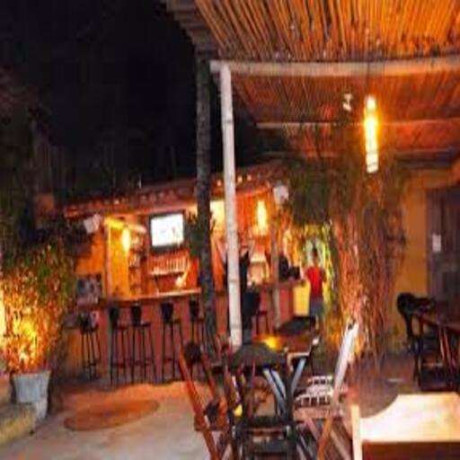
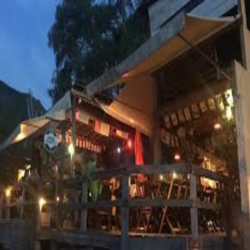
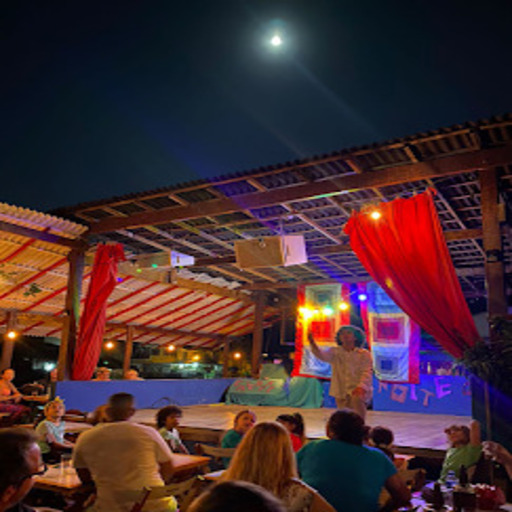
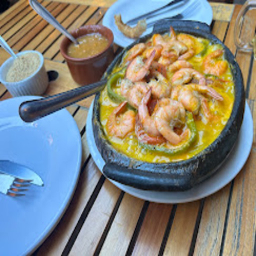
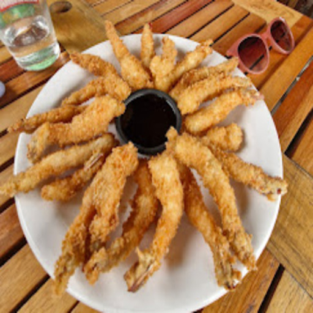
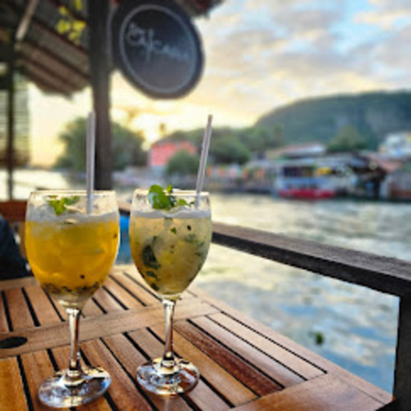

Caiçaras
Clima descontraído, drinks refrescantes e o melhor pôr do sol da lagoa.
📸 Conheça o Espaço







O Caiçaras é um dos bares mais charmosos e procurados da Ilha da Gigóia. Com uma atmosfera rústica e acolhedora, o espaço foi pensado para quem deseja relaxar, jogar conversa fora e apreciar a beleza natural da região à beira da água.
A casa é famosa por sua carta de drinks autorais e clássicos muito bem executados, perfeitos para acompanhar os dias ensolarados ou o início da noite na ilha.
🍹 Destaques do Bar
- Drinks Especiais: Uma seleção incrível que vai das tradicionais caipirinhas com frutas da estação até criações exclusivas da casa.
- Petiscos de Boteco: Porções caprichadas e muito saborosas, ideais para compartilhar com os amigos enquanto a música rola.
- Visual Fim de Tarde: A localização privilegiada oferece um dos melhores ângulos para curtir o famoso pôr do sol da Ilha da Gigóia.
Se você procura um lugar animado, com bom atendimento e aquela vibe única que só os bares da ilha têm, o Caiçaras é uma parada mais do que obrigatória no seu roteiro.